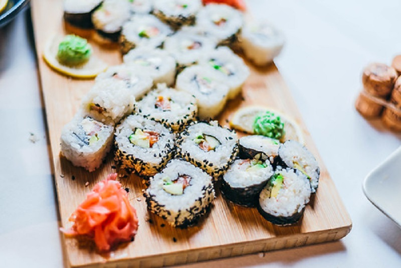

The best known Japanese food: Sushi
Sushi is one of the first foods that spring to mind when we think about Japanese cuisine. This delicacy was one of the first Japanese dishes to be exported to the US after the Meiji Restoration in 1868, and since then its popularity has steadily increased year after year. The word ‘sushi’ refers to any dish made with Japanese rice that has been seasoned with rice vinegar. Common varieties of sushi include makizushi (sushi rice and fillings rolled up in nori seaweed), nigiri sushi (shaped, bite-size mounds of sushi rice with single slices of raw fish or similar draped over the top) and inarizushi (sushi rice stuffed inside pockets of inari; a type of seasoned, fried tofu).